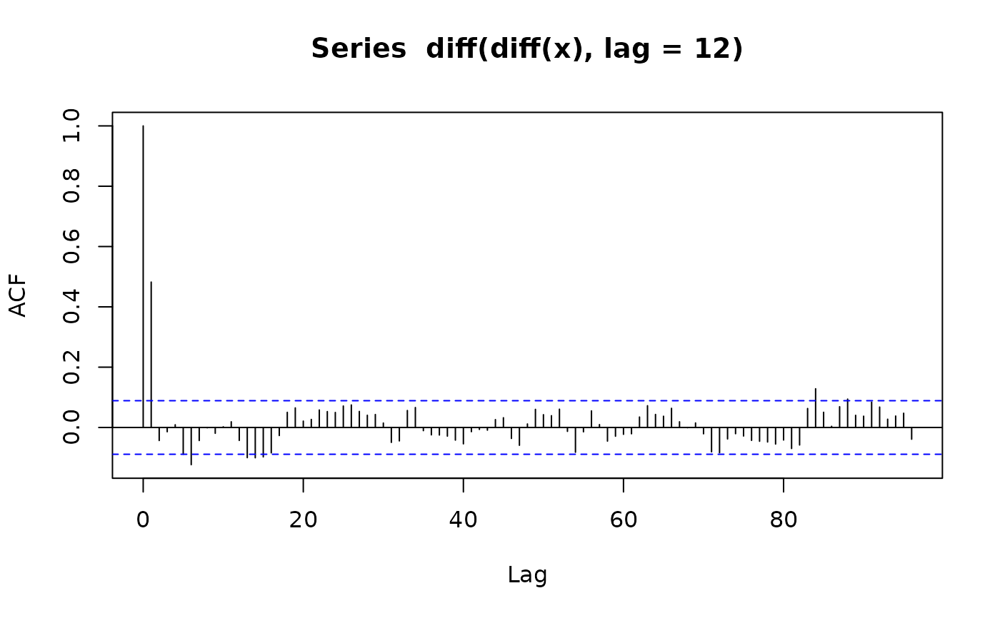
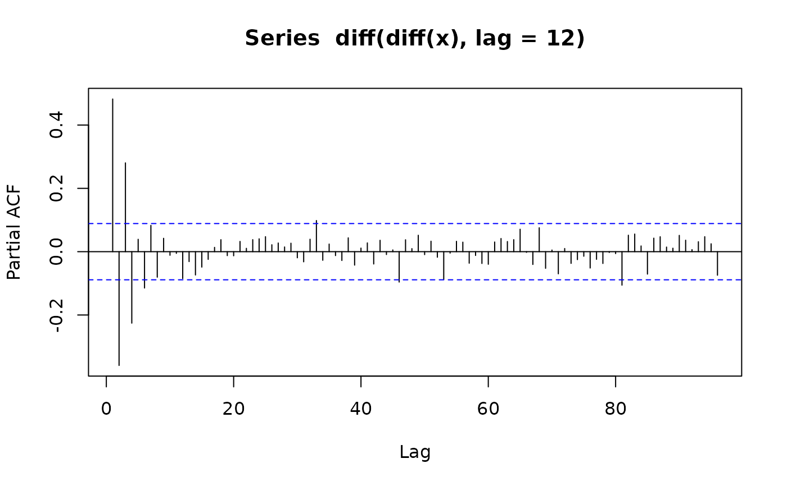

Forecasting functions for seasonal ARIMA models
fun.forecast.RdForecasting functions for seasonal ARIMA models.
fun.forecast(past, n = max(2 * length(past), 12), eps = numeric(n), pasteps, ...)
Arguments
| past | past values of the time series, by default zeroes. |
|---|---|
| n | number of forecasts to compute. |
| eps | values of the white noise sequence (for simulation of future). Currently not used! |
| pasteps | past values of the white noise sequence for models with MA terms, 0 by default. |
| ... | specification of the model, passed to |
Details
fun.forecast computes predictions from a SARIMA model. The
model is specified using the "..." arguments which are passed to
new("SarimaModel", ...), see the description of class
"SarimaModel" for details.
Argument past, if provided, should contain a least as many values as
needed for the prediction equation. It is harmless to provide more
values than necessary, even a whole time series.
fun.forecast can be used to illustrate, for example, the
inherent difference for prediction of integrated and seasonally
integrated models to corresponding models with roots close to the unit
circle.
Value
the forecasts as an object of class "ts"
Author
Georgi N. Boshnakov
Examples
fi1si1a <- fun.forecast(past = rnorm(24, sd = 5), n = 120, iorder = 1, siorder = 1, nseasons = 12) plot(fi1si1a)fi1si1a <- fun.forecast(past = AirPassengers[120:144], n = 120, iorder = 1, siorder = 1, nseasons = 12) plot(fi1si1a) m1 <- list(iorder = 1, siorder = 1, ma = 0.8, nseasons = 12, sigma2 = 1) m1#> $iorder #> [1] 1 #> #> $siorder #> [1] 1 #> #> $ma #> [1] 0.8 #> #> $nseasons #> [1] 12 #> #> $sigma2 #> [1] 1 #>#> $iorder #> [1] 1 #> #> $siorder #> [1] 1 #> #> $ma #> [1] 0.8 #> #> $sma #> [1] 0.5 #> #> $nseasons #> [1] 12 #> #> $sigma2 #> [1] 1 #>#> #> Call: #> arima(x = x2, order = c(0, 1, 1), seasonal = list(order = c(0, 1, 0), nseasons = 12)) #> #> Coefficients: #> ma1 #> -0.9720 #> s.e. 0.0072 #> #> sigma^2 estimated as 41.33: log likelihood = -1634.75, aic = 3273.51x2past <- rnorm(13, sd = 10) x2 <- sim_sarima(model = m2, n = 500, x = list(init = x2past)) plot(x2)fun.forecast(ar = 0.5, n = 100)#> Time Series: #> Start = 1 #> End = 100 #> Frequency = 1 #> [1] 0 0 0 0 0 0 0 0 0 0 0 0 0 0 0 0 0 0 0 0 0 0 0 0 0 0 0 0 0 0 0 0 0 0 0 0 0 #> [38] 0 0 0 0 0 0 0 0 0 0 0 0 0 0 0 0 0 0 0 0 0 0 0 0 0 0 0 0 0 0 0 0 0 0 0 0 0 #> [75] 0 0 0 0 0 0 0 0 0 0 0 0 0 0 0 0 0 0 0 0 0 0 0 0 0 0fun.forecast(ar = 0.5, n = 100, past = 1)#> Time Series: #> Start = 1 #> End = 100 #> Frequency = 1 #> [1] 5.000000e-01 2.500000e-01 1.250000e-01 6.250000e-02 3.125000e-02 #> [6] 1.562500e-02 7.812500e-03 3.906250e-03 1.953125e-03 9.765625e-04 #> [11] 4.882812e-04 2.441406e-04 1.220703e-04 6.103516e-05 3.051758e-05 #> [16] 1.525879e-05 7.629395e-06 3.814697e-06 1.907349e-06 9.536743e-07 #> [21] 4.768372e-07 2.384186e-07 1.192093e-07 5.960464e-08 2.980232e-08 #> [26] 1.490116e-08 7.450581e-09 3.725290e-09 1.862645e-09 9.313226e-10 #> [31] 4.656613e-10 2.328306e-10 1.164153e-10 5.820766e-11 2.910383e-11 #> [36] 1.455192e-11 7.275958e-12 3.637979e-12 1.818989e-12 9.094947e-13 #> [41] 4.547474e-13 2.273737e-13 1.136868e-13 5.684342e-14 2.842171e-14 #> [46] 1.421085e-14 7.105427e-15 3.552714e-15 1.776357e-15 8.881784e-16 #> [51] 4.440892e-16 2.220446e-16 1.110223e-16 5.551115e-17 2.775558e-17 #> [56] 1.387779e-17 6.938894e-18 3.469447e-18 1.734723e-18 8.673617e-19 #> [61] 4.336809e-19 2.168404e-19 1.084202e-19 5.421011e-20 2.710505e-20 #> [66] 1.355253e-20 6.776264e-21 3.388132e-21 1.694066e-21 8.470329e-22 #> [71] 4.235165e-22 2.117582e-22 1.058791e-22 5.293956e-23 2.646978e-23 #> [76] 1.323489e-23 6.617445e-24 3.308722e-24 1.654361e-24 8.271806e-25 #> [81] 4.135903e-25 2.067952e-25 1.033976e-25 5.169879e-26 2.584939e-26 #> [86] 1.292470e-26 6.462349e-27 3.231174e-27 1.615587e-27 8.077936e-28 #> [91] 4.038968e-28 2.019484e-28 1.009742e-28 5.048710e-29 2.524355e-29 #> [96] 1.262177e-29 6.310887e-30 3.155444e-30 1.577722e-30 7.888609e-31fun.forecast(ma = 0.5, n = 100, past = 1)#> Time Series: #> Start = 1 #> End = 101 #> Frequency = 1 #> [1] 0 0 0 0 0 0 0 0 0 0 0 0 0 0 0 0 0 0 0 0 0 0 0 0 0 0 0 0 0 0 0 0 0 0 0 0 0 #> [38] 0 0 0 0 0 0 0 0 0 0 0 0 0 0 0 0 0 0 0 0 0 0 0 0 0 0 0 0 0 0 0 0 0 0 0 0 0 #> [75] 0 0 0 0 0 0 0 0 0 0 0 0 0 0 0 0 0 0 0 0 0 0 0 0 0 0 0fun.forecast(iorder = 1, ma = 0.5, n = 100, past = 1)#> Time Series: #> Start = 1 #> End = 101 #> Frequency = 1 #> [1] 0 0 0 0 0 0 0 0 0 0 0 0 0 0 0 0 0 0 0 0 0 0 0 0 0 0 0 0 0 0 0 0 0 0 0 0 0 #> [38] 0 0 0 0 0 0 0 0 0 0 0 0 0 0 0 0 0 0 0 0 0 0 0 0 0 0 0 0 0 0 0 0 0 0 0 0 0 #> [75] 0 0 0 0 0 0 0 0 0 0 0 0 0 0 0 0 0 0 0 0 0 0 0 0 0 0 0fun.forecast(iorder = 1, ma = 0.5, ar = 0.8, n = 100, past = 1)#> Time Series: #> Start = 1 #> End = 100 #> Frequency = 1 #> [1] 8.000000e-01 6.400000e-01 5.120000e-01 4.096000e-01 3.276800e-01 #> [6] 2.621440e-01 2.097152e-01 1.677722e-01 1.342177e-01 1.073742e-01 #> [11] 8.589935e-02 6.871948e-02 5.497558e-02 4.398047e-02 3.518437e-02 #> [16] 2.814750e-02 2.251800e-02 1.801440e-02 1.441152e-02 1.152922e-02 #> [21] 9.223372e-03 7.378698e-03 5.902958e-03 4.722366e-03 3.777893e-03 #> [26] 3.022315e-03 2.417852e-03 1.934281e-03 1.547425e-03 1.237940e-03 #> [31] 9.903520e-04 7.922816e-04 6.338253e-04 5.070602e-04 4.056482e-04 #> [36] 3.245186e-04 2.596148e-04 2.076919e-04 1.661535e-04 1.329228e-04 #> [41] 1.063382e-04 8.507059e-05 6.805647e-05 5.444518e-05 4.355614e-05 #> [46] 3.484491e-05 2.787593e-05 2.230075e-05 1.784060e-05 1.427248e-05 #> [51] 1.141798e-05 9.134385e-06 7.307508e-06 5.846007e-06 4.676805e-06 #> [56] 3.741444e-06 2.993155e-06 2.394524e-06 1.915619e-06 1.532496e-06 #> [61] 1.225996e-06 9.807971e-07 7.846377e-07 6.277102e-07 5.021681e-07 #> [66] 4.017345e-07 3.213876e-07 2.571101e-07 2.056881e-07 1.645505e-07 #> [71] 1.316404e-07 1.053123e-07 8.424983e-08 6.739987e-08 5.391989e-08 #> [76] 4.313591e-08 3.450873e-08 2.760699e-08 2.208559e-08 1.766847e-08 #> [81] 1.413478e-08 1.130782e-08 9.046257e-09 7.237006e-09 5.789604e-09 #> [86] 4.631684e-09 3.705347e-09 2.964277e-09 2.371422e-09 1.897138e-09 #> [91] 1.517710e-09 1.214168e-09 9.713344e-10 7.770676e-10 6.216540e-10 #> [96] 4.973232e-10 3.978586e-10 3.182869e-10 2.546295e-10 2.037036e-10fun.forecast(m1, n = 100)#> Time Series: #> Start = 1 #> End = 101 #> Frequency = 1 #> $sigma2 #> [1] 0 #> #> [[2]] #> [1] 0 #> #> [[3]] #> [1] 0 #> #> [[4]] #> [1] 0 #> #> [[5]] #> [1] 0 #> #> [[6]] #> [1] 0 #> #> [[7]] #> [1] 0 #> #> [[8]] #> [1] 0 #> #> [[9]] #> [1] 0 #> #> [[10]] #> [1] 0 #> #> [[11]] #> [1] 0 #> #> [[12]] #> [1] 0 #> #> [[13]] #> [1] 0 #> #> [[14]] #> [1] 0 #> #> [[15]] #> [1] 0 #> #> [[16]] #> [1] 0 #> #> [[17]] #> [1] 0 #> #> [[18]] #> [1] 0 #> #> [[19]] #> [1] 0 #> #> [[20]] #> [1] 0 #> #> [[21]] #> [1] 0 #> #> [[22]] #> [1] 0 #> #> [[23]] #> [1] 0 #> #> [[24]] #> [1] 0 #> #> [[25]] #> [1] 0 #> #> [[26]] #> [1] 0 #> #> [[27]] #> [1] 0 #> #> [[28]] #> [1] 0 #> #> [[29]] #> [1] 0 #> #> [[30]] #> [1] 0 #> #> [[31]] #> [1] 0 #> #> [[32]] #> [1] 0 #> #> [[33]] #> [1] 0 #> #> [[34]] #> [1] 0 #> #> [[35]] #> [1] 0 #> #> [[36]] #> [1] 0 #> #> [[37]] #> [1] 0 #> #> [[38]] #> [1] 0 #> #> [[39]] #> [1] 0 #> #> [[40]] #> [1] 0 #> #> [[41]] #> [1] 0 #> #> [[42]] #> [1] 0 #> #> [[43]] #> [1] 0 #> #> [[44]] #> [1] 0 #> #> [[45]] #> [1] 0 #> #> [[46]] #> [1] 0 #> #> [[47]] #> [1] 0 #> #> [[48]] #> [1] 0 #> #> [[49]] #> [1] 0 #> #> [[50]] #> [1] 0 #> #> [[51]] #> [1] 0 #> #> [[52]] #> [1] 0 #> #> [[53]] #> [1] 0 #> #> [[54]] #> [1] 0 #> #> [[55]] #> [1] 0 #> #> [[56]] #> [1] 0 #> #> [[57]] #> [1] 0 #> #> [[58]] #> [1] 0 #> #> [[59]] #> [1] 0 #> #> [[60]] #> [1] 0 #> #> [[61]] #> [1] 0 #> #> [[62]] #> [1] 0 #> #> [[63]] #> [1] 0 #> #> [[64]] #> [1] 0 #> #> [[65]] #> [1] 0 #> #> [[66]] #> [1] 0 #> #> [[67]] #> [1] 0 #> #> [[68]] #> [1] 0 #> #> [[69]] #> [1] 0 #> #> [[70]] #> [1] 0 #> #> [[71]] #> [1] 0 #> #> [[72]] #> [1] 0 #> #> [[73]] #> [1] 0 #> #> [[74]] #> [1] 0 #> #> [[75]] #> [1] 0 #> #> [[76]] #> [1] 0 #> #> [[77]] #> [1] 0 #> #> [[78]] #> [1] 0 #> #> [[79]] #> [1] 0 #> #> [[80]] #> [1] 0 #> #> [[81]] #> [1] 0 #> #> [[82]] #> [1] 0 #> #> [[83]] #> [1] 0 #> #> [[84]] #> [1] 0 #> #> [[85]] #> [1] 0 #> #> [[86]] #> [1] 0 #> #> [[87]] #> [1] 0 #> #> [[88]] #> [1] 0 #> #> [[89]] #> [1] 0 #> #> [[90]] #> [1] 0 #> #> [[91]] #> [1] 0 #> #> [[92]] #> [1] 0 #> #> [[93]] #> [1] 0 #> #> [[94]] #> [1] 0 #> #> [[95]] #> [1] 0 #> #> [[96]] #> [1] 0 #> #> [[97]] #> [1] 0 #> #> [[98]] #> [1] 0 #> #> [[99]] #> [1] 0 #> #> [[100]] #> [1] 0 #> #> [[101]] #> [1] 0 #>fun.forecast(m2, n = 100)#> Time Series: #> Start = 1 #> End = 101 #> Frequency = 1 #> $sigma2 #> [1] 0 #> #> [[2]] #> [1] 0 #> #> [[3]] #> [1] 0 #> #> [[4]] #> [1] 0 #> #> [[5]] #> [1] 0 #> #> [[6]] #> [1] 0 #> #> [[7]] #> [1] 0 #> #> [[8]] #> [1] 0 #> #> [[9]] #> [1] 0 #> #> [[10]] #> [1] 0 #> #> [[11]] #> [1] 0 #> #> [[12]] #> [1] 0 #> #> [[13]] #> [1] 0 #> #> [[14]] #> [1] 0 #> #> [[15]] #> [1] 0 #> #> [[16]] #> [1] 0 #> #> [[17]] #> [1] 0 #> #> [[18]] #> [1] 0 #> #> [[19]] #> [1] 0 #> #> [[20]] #> [1] 0 #> #> [[21]] #> [1] 0 #> #> [[22]] #> [1] 0 #> #> [[23]] #> [1] 0 #> #> [[24]] #> [1] 0 #> #> [[25]] #> [1] 0 #> #> [[26]] #> [1] 0 #> #> [[27]] #> [1] 0 #> #> [[28]] #> [1] 0 #> #> [[29]] #> [1] 0 #> #> [[30]] #> [1] 0 #> #> [[31]] #> [1] 0 #> #> [[32]] #> [1] 0 #> #> [[33]] #> [1] 0 #> #> [[34]] #> [1] 0 #> #> [[35]] #> [1] 0 #> #> [[36]] #> [1] 0 #> #> [[37]] #> [1] 0 #> #> [[38]] #> [1] 0 #> #> [[39]] #> [1] 0 #> #> [[40]] #> [1] 0 #> #> [[41]] #> [1] 0 #> #> [[42]] #> [1] 0 #> #> [[43]] #> [1] 0 #> #> [[44]] #> [1] 0 #> #> [[45]] #> [1] 0 #> #> [[46]] #> [1] 0 #> #> [[47]] #> [1] 0 #> #> [[48]] #> [1] 0 #> #> [[49]] #> [1] 0 #> #> [[50]] #> [1] 0 #> #> [[51]] #> [1] 0 #> #> [[52]] #> [1] 0 #> #> [[53]] #> [1] 0 #> #> [[54]] #> [1] 0 #> #> [[55]] #> [1] 0 #> #> [[56]] #> [1] 0 #> #> [[57]] #> [1] 0 #> #> [[58]] #> [1] 0 #> #> [[59]] #> [1] 0 #> #> [[60]] #> [1] 0 #> #> [[61]] #> [1] 0 #> #> [[62]] #> [1] 0 #> #> [[63]] #> [1] 0 #> #> [[64]] #> [1] 0 #> #> [[65]] #> [1] 0 #> #> [[66]] #> [1] 0 #> #> [[67]] #> [1] 0 #> #> [[68]] #> [1] 0 #> #> [[69]] #> [1] 0 #> #> [[70]] #> [1] 0 #> #> [[71]] #> [1] 0 #> #> [[72]] #> [1] 0 #> #> [[73]] #> [1] 0 #> #> [[74]] #> [1] 0 #> #> [[75]] #> [1] 0 #> #> [[76]] #> [1] 0 #> #> [[77]] #> [1] 0 #> #> [[78]] #> [1] 0 #> #> [[79]] #> [1] 0 #> #> [[80]] #> [1] 0 #> #> [[81]] #> [1] 0 #> #> [[82]] #> [1] 0 #> #> [[83]] #> [1] 0 #> #> [[84]] #> [1] 0 #> #> [[85]] #> [1] 0 #> #> [[86]] #> [1] 0 #> #> [[87]] #> [1] 0 #> #> [[88]] #> [1] 0 #> #> [[89]] #> [1] 0 #> #> [[90]] #> [1] 0 #> #> [[91]] #> [1] 0 #> #> [[92]] #> [1] 0 #> #> [[93]] #> [1] 0 #> #> [[94]] #> [1] 0 #> #> [[95]] #> [1] 0 #> #> [[96]] #> [1] 0 #> #> [[97]] #> [1] 0 #> #> [[98]] #> [1] 0 #> #> [[99]] #> [1] 0 #> #> [[100]] #> [1] 0 #> #> [[101]] #> [1] 0 #>fun.forecast(iorder = 1, ar = 0.8, ma = 0.5, n = 100, past = 1)#> Time Series: #> Start = 1 #> End = 100 #> Frequency = 1 #> [1] 8.000000e-01 6.400000e-01 5.120000e-01 4.096000e-01 3.276800e-01 #> [6] 2.621440e-01 2.097152e-01 1.677722e-01 1.342177e-01 1.073742e-01 #> [11] 8.589935e-02 6.871948e-02 5.497558e-02 4.398047e-02 3.518437e-02 #> [16] 2.814750e-02 2.251800e-02 1.801440e-02 1.441152e-02 1.152922e-02 #> [21] 9.223372e-03 7.378698e-03 5.902958e-03 4.722366e-03 3.777893e-03 #> [26] 3.022315e-03 2.417852e-03 1.934281e-03 1.547425e-03 1.237940e-03 #> [31] 9.903520e-04 7.922816e-04 6.338253e-04 5.070602e-04 4.056482e-04 #> [36] 3.245186e-04 2.596148e-04 2.076919e-04 1.661535e-04 1.329228e-04 #> [41] 1.063382e-04 8.507059e-05 6.805647e-05 5.444518e-05 4.355614e-05 #> [46] 3.484491e-05 2.787593e-05 2.230075e-05 1.784060e-05 1.427248e-05 #> [51] 1.141798e-05 9.134385e-06 7.307508e-06 5.846007e-06 4.676805e-06 #> [56] 3.741444e-06 2.993155e-06 2.394524e-06 1.915619e-06 1.532496e-06 #> [61] 1.225996e-06 9.807971e-07 7.846377e-07 6.277102e-07 5.021681e-07 #> [66] 4.017345e-07 3.213876e-07 2.571101e-07 2.056881e-07 1.645505e-07 #> [71] 1.316404e-07 1.053123e-07 8.424983e-08 6.739987e-08 5.391989e-08 #> [76] 4.313591e-08 3.450873e-08 2.760699e-08 2.208559e-08 1.766847e-08 #> [81] 1.413478e-08 1.130782e-08 9.046257e-09 7.237006e-09 5.789604e-09 #> [86] 4.631684e-09 3.705347e-09 2.964277e-09 2.371422e-09 1.897138e-09 #> [91] 1.517710e-09 1.214168e-09 9.713344e-10 7.770676e-10 6.216540e-10 #> [96] 4.973232e-10 3.978586e-10 3.182869e-10 2.546295e-10 2.037036e-10